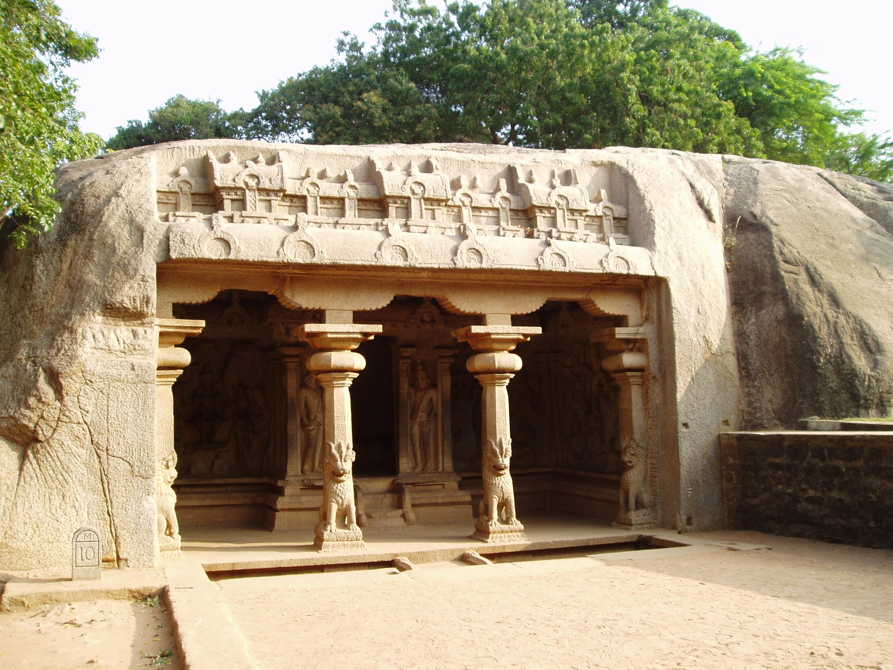

Varaha Cave
Pallavas were courageous enough to try new kind of architectural style, using the natural terrain to carve
out magnificent monuments. This Varaha cave temple which lies behind Arjuna penance depicts the monolithic rock cut
style architecture. The history says that this cave is built during the reign of king Mamalla. This cave temple is small,
yet highly sophisticated in architecture.
The front end of temple welcomes us with mandapa, which is a marvelous varandeh with four pillars and two semi-columns.
The bases of each columns is contains the figures of horned lions, which is considered to be doorkeepers. Inside the cave,
the prominent piece of northern sculpture is Varaha, who is said to be one of the avatar of Lord Vishnu depicting a wild boar
to save his devotee prithvi. The figure of Varaha stands radiantly with holding his wife Bhumi, mother earth. The southern panel
shows another avatar of Lord Vishnu,Trivikrama.In the eastern panel lies the goddess Lakshmi ,goddess of money along with her two
maidens and elephants god of money and to western panel lies goddess Durga standing on a lotus under a beautifully carved royal umbrella.
This sculpture resembles the Draupathi Ratha.